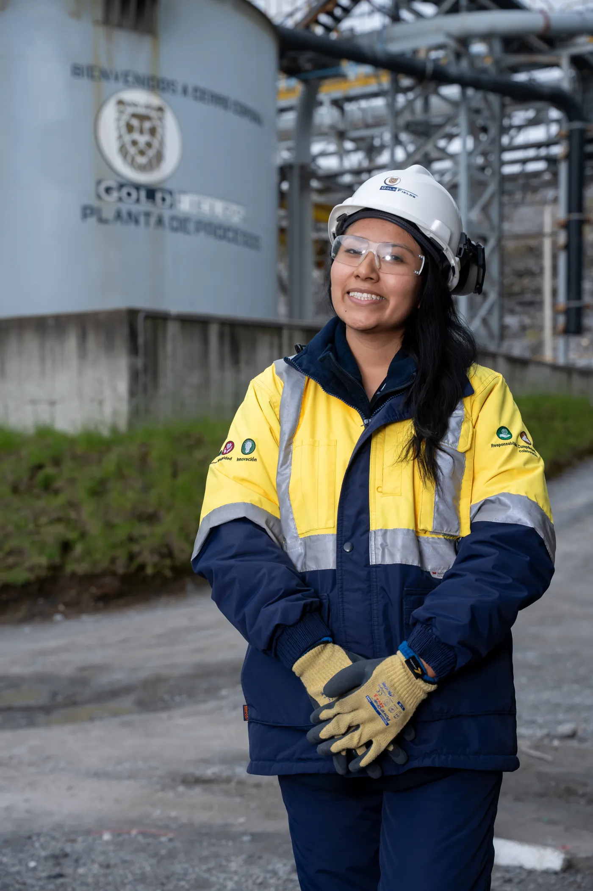
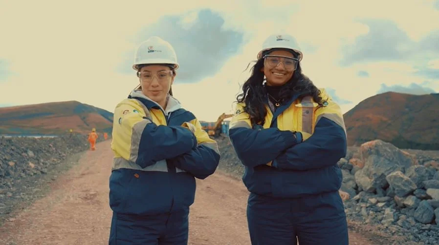

Protagonistas Mineras · Gold Fields Perú
Tu Ruta Protagonista
Entender el proceso cambia cómo lo vives.
Postular a Protagonistas Mineras puede ser un gran paso en tu desarrollo profesional y también generar muchas dudas cuando no tienes claro qué viene después. Por eso creamos este espacio: para darte mayor visibilidad del proceso y acompañarte en cada etapa.
- Qué sucede durante el proceso de selección
- Qué esperar y en qué enfocarte
- Respuestas a las preguntas más frecuentes
El programa
Protagonistas Mineras
Protagonistas Mineras es el programa de Gold Fields Perú que impulsa la participación femenina en la industria minera, dando oportunidades profesionales a mujeres recién egresadas de carreras vinculadas a la minería.
No necesitas tener todas las respuestas desde el inicio. Pero sí puedes tener claridad en el camino — para eso es esta guía.

El recorrido
¿Cómo funciona el proceso?
Queremos que tengas claridad sobre cada etapa. Te mostramos el recorrido para que conozcas qué sucede desde la convocatoria hasta la confirmación de selección, qué esperar y quién se pondrá en contacto contigo en cada momento.
Cada etapa tiene un propósito distinto y nos permite conocer mejor a las postulantes para tomar decisiones de manera responsable y transparente.
Eficiencia Profesional
Para este proceso trabajamos de la mano con Eficiencia Profesional, una consultora especializada en gestión del talento humano, con 30 años en el mercado. Junto a su equipo, se encargan de la Convocatoria, la Validación de requisitos mínimos y las Evaluaciones técnicas. ¡Serán tu primer contacto durante este camino!
- 1 Convocatoria
- 2 Validación de requisitos mínimos
- 3 Evaluaciones técnicas
Etapas del proceso
Tu ruta, de principio a fin: 8 etapas.
Recorre cada parada del camino. En cada etapa verás qué significa, qué esperar, algunos tips y quién se pondrá en contacto contigo.
-
Contacto: Eficiencia Profesional Convocatoria
¿Qué significa?
Es el inicio oficial de la convocatoria y la apertura de postulaciones al programa.
¿Qué esperar?
Encontrarás los requisitos, fechas y pasos para completar tu postulación.
Tips
- Lee toda la información antes de postular.
- Completa correctamente tus datos de contacto.
- Verifica que tu CV esté actualizado.
Dar el primer paso puede generar nervios. Lo importante es animarte a intentarlo.
-
Contacto: Eficiencia Profesional Validación de requisitos mínimos
¿Qué significa?
Se verifica que tu postulación cumpla con los requisitos mínimos del programa.
¿Qué esperar?
Si tu perfil cumple con los requisitos, continuarás avanzando en el proceso. Si es necesario, podrías recibir una comunicación para solicitar información adicional.
Tips
- Revisa con frecuencia tu correo electrónico, incluida la carpeta de spam.
- Mantén actualizado tu número de contacto.
- Responde dentro de los plazos indicados.
Cada postulación es revisada cuidadosamente. La espera es parte normal de esta etapa.
-
Contacto: Eficiencia Profesional Evaluaciones técnicas
¿Qué significa?
Realizarás evaluaciones que complementarán la información de tu postulación.
¿Qué esperar?
Recibirás por correo las indicaciones para acceder a las evaluaciones y el plazo para completarlas.
Tips
- Verifica que tengas una conexión estable a internet.
- Lee las instrucciones antes de comenzar.
- Completa la evaluación dentro del plazo indicado.
Realiza esta etapa con tranquilidad y siguiendo las indicaciones recibidas.
-
Contacto: Gold Fields Assessment grupal
¿Qué significa?
Participarás en una dinámica grupal para conocer mejor algunas competencias relacionadas con la forma de trabajar e interactuar con otras personas.
¿Qué esperar?
Recibirás la fecha, hora y enlace de conexión. Antes de iniciar, el facilitador explicará la dinámica y las indicaciones que deberás seguir durante la actividad.
Tips
- Conéctate unos minutos antes de la hora programada.
- Procura participar desde un lugar tranquilo y con buena conexión.
- Mantén tu cámara y audio listos según las indicaciones recibidas.
No buscamos respuestas perfectas. Queremos conocerte tal como eres.
-
Contacto: Gold Fields Entrevista con el área
¿Qué significa?
Tendrás una entrevista con el equipo del área a la que estás postulando.
¿Qué esperar?
Será una conversación para conocer mejor tu perfil, tu motivación y tu interés por formar parte del equipo.
Tips
- Confirma tu disponibilidad cuando seas contactada.
- Conéctate unos minutos antes de la hora programada.
- Busca un lugar tranquilo y con buena conexión.
Esta también es una oportunidad para conocer más sobre el área y resolver tus dudas.
-
Contacto: Gold Fields Validación de documentos
¿Qué significa?
Solicitaremos la documentación necesaria para continuar con el proceso.
¿Qué esperar?
Recibirás por correo las indicaciones sobre los documentos requeridos y la fecha límite para enviarlos.
Tips
- Envía únicamente los documentos solicitados.
- Verifica que los archivos sean legibles.
- Revisa que la información enviada sea correcta antes de compartirla.
Cada documento nos ayuda a continuar con tu proceso de incorporación.
-
Contacto: Gold Fields Aptitud médica
¿Qué significa?
Realizarás la evaluación médica ocupacional correspondiente.
¿Qué esperar?
Te contactaremos para indicarte cómo programaremos tu evaluación y compartirte toda la información necesaria antes de tu cita.
Tips
- Revisa las indicaciones enviadas antes de asistir.
- Lleva tu documento de identidad.
- Si tienes alguna consulta, comunícate con nosotros antes de tu cita.
Esta evaluación forma parte del proceso habitual de incorporación. Si es la primera vez que realizas una evaluación médica ocupacional, no te preocupes: antes de tu cita recibirás toda la información necesaria para que puedas asistir con tranquilidad.
-
Contacto: Gold Fields Confirmación de selección
¿Qué significa?
Es la etapa final del proceso de selección.
¿Qué esperar?
Si eres seleccionada, nos pondremos en contacto contigo para compartir los siguientes pasos de tu incorporación.
Tips
- Mantente atenta a tu correo electrónico y teléfono.
- Lee cuidadosamente la información que recibas.
- Responde dentro del plazo indicado.
Gracias por acompañarnos durante este proceso. Valoramos el tiempo y compromiso que dedicaste a participar.

Recursos para acompañarte
Prepárate con Eficiencia Profesional.
Queremos que llegues a cada etapa con mayor confianza. Por eso, Eficiencia Profesional pone a tu disposición recursos que pueden ayudarte durante el proceso de selección.
- Empleabilidad
- Entrevistas personales
- Marca personal
- Comunicación estratégica
- Liderazgo femenino
- Autoconocimiento
Todo el contenido está reunido en el toolkit de Eficiencia Profesional.
Explorar recursos →Preguntas frecuentes
Resolvemos tus dudas.
¿Necesito experiencia previa?
No necesariamente. Estas posiciones están diseñadas para perfiles en formación y para quienes están iniciando su experiencia profesional.
¿El proceso demora?
Sí. Algunas etapas pueden tomar más tiempo debido al volumen de postulaciones y a las validaciones necesarias para garantizar un proceso responsable.
¿Cómo sabré si sigo avanzando?
Te contactaremos durante cada etapa relevante del proceso. Recuerda revisar con frecuencia tu correo electrónico, incluida la carpeta de spam.
¿Puedo volver a postular?
Sí. Haber participado anteriormente no limita futuras postulaciones.
Gracias por ser parte
Cada paso también es una oportunidad.
Cada paso que das es una oportunidad para seguir creciendo profesionalmente. Gracias por ser parte de Protagonistas Mineras 2026. Esperamos que este espacio te haya ayudado a conocer mejor el proceso y te acompañe en cada etapa.